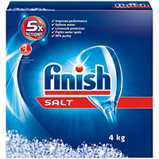
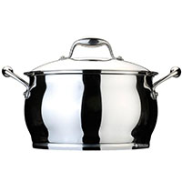
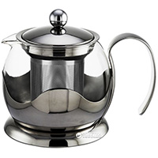
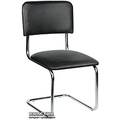
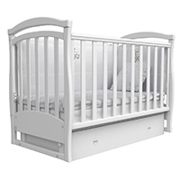

Рідини для миття посуду
22 грн
Fairy - економний рідкий засіб для миття посуду з ароматом яблук. Може використовуватися для миття скляних, пластикових, металічних, керамічних та дерев'яних поверхонь.

Для миття посуду
105 грн
Покращує роботу посудомийної машини. Пом'якшує воду. Усуває патьоки. Захищає від накипу. Захищає від вапняного нальоту.

Посуд
1566 грн
Матеріал: Нержавіюча сталь
Тип: Традиційна кастрюля
Діаметр: 16 см
Кришка: Нержавіюча сталь
Тип кріплення ручок: На заклепках
Країна виробник: Бельгія

Посуд
700 грн
Гарний чайник для заварювання відмінно вписується в інтер'єр сучасної кухні, а якщо у нього ще прозорі стінки, то ви зможете спостерігати за процесом заварювання вашого улюбленого чаю.

Меблі
717 грн
Матеріал оббивки: Шкірозамінник
Розміри сидіння: 48 х 45 см
Країна-виробник товару: Україна

Меблі
3000 грн
Ліжечко Соня ЛД6 зроблено з натурального дерева. Ця модель ліжечка впишеться а інтер'єр будь-якої дитячої кімнати.